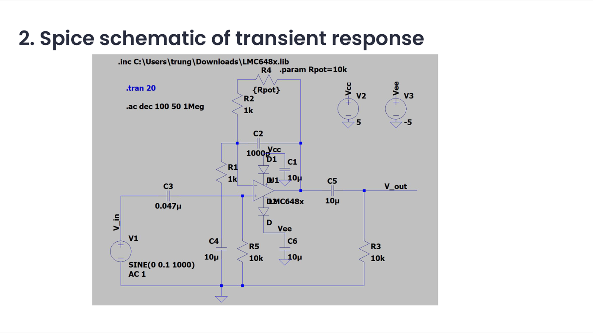
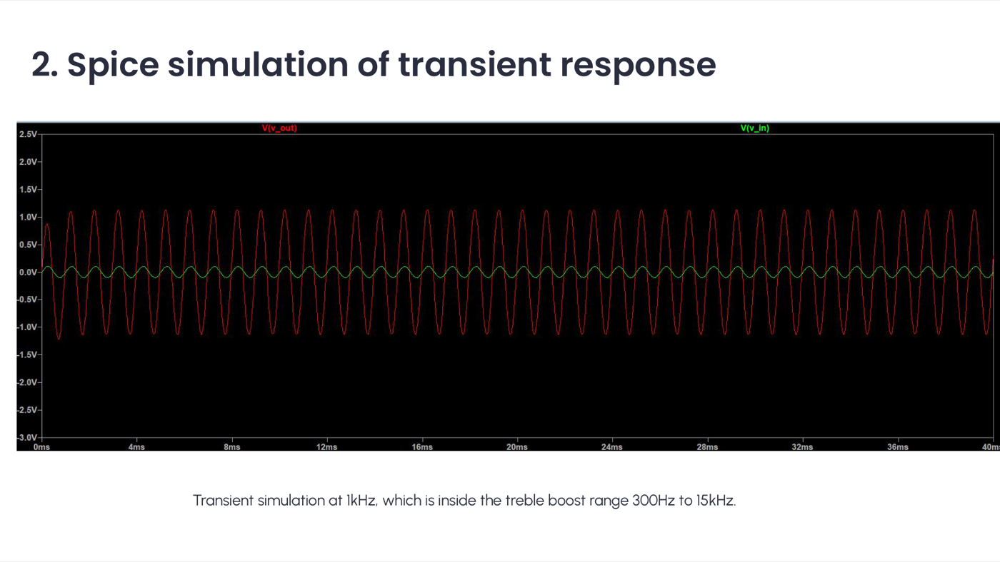
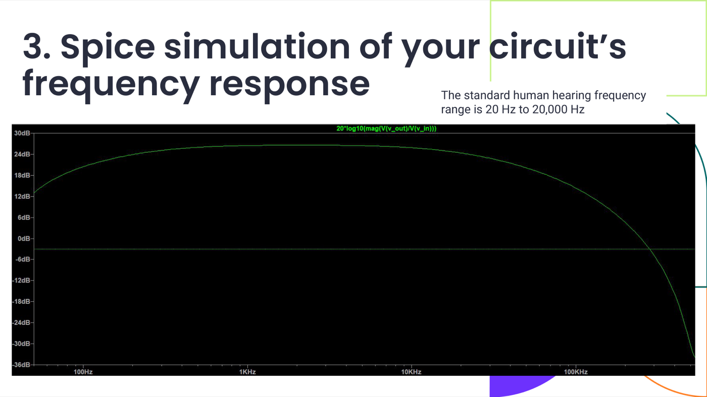
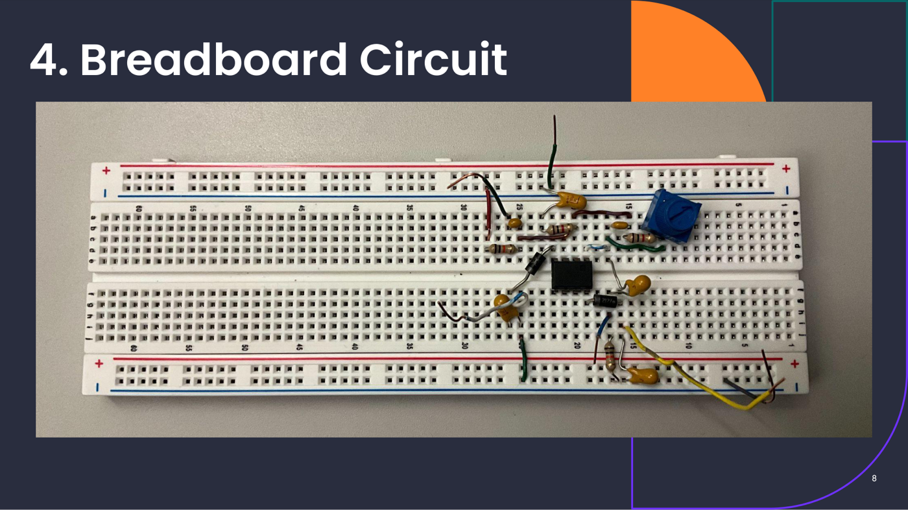
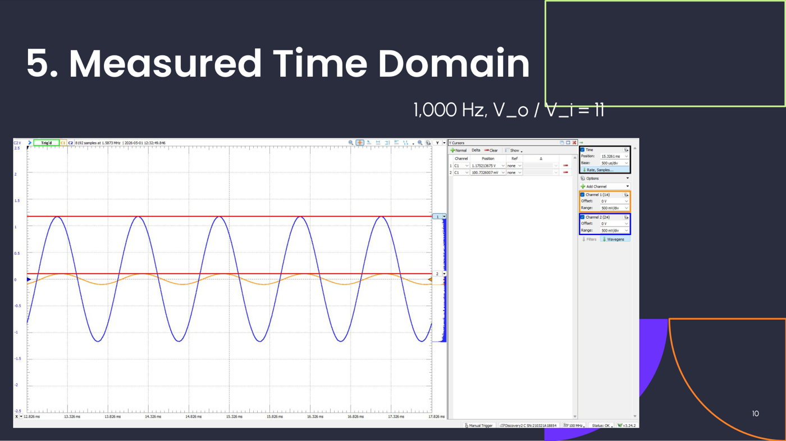
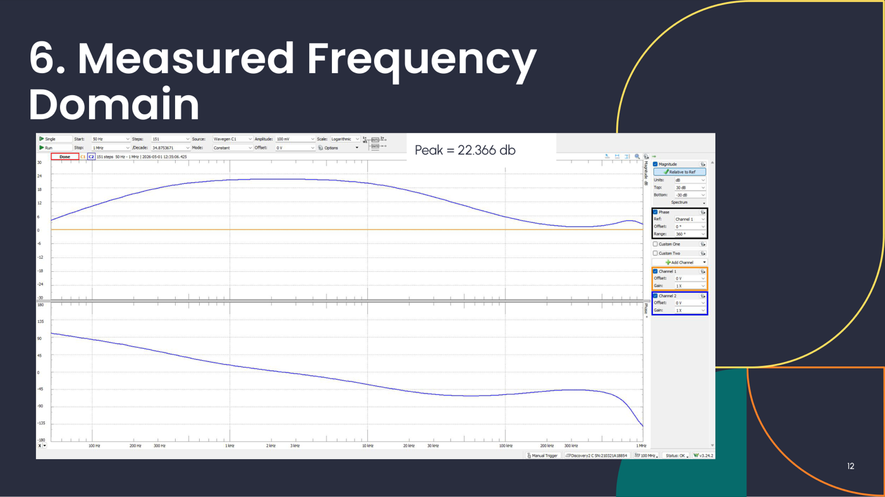

Treble Boost
Effects Box.
An op-amp guitar pedal that boosts mid/treble frequencies to drive an amp into a biting, distorted tone — hand-designed, SPICE-simulated, breadboarded, and measured on the bench.
HeadlineMeasured peak gain 22.4 dB · ×11 at 1 kHz on the bench · hand calc, SPICE, and measurement compared side by side

Problem
This circuit sits between an electric guitar and its amplifier. It's a non-inverting op-amp gain stage combined with a high-pass and low-pass filter, so it works as a bandpass "treble boost": it attenuates bass, amplifies the 300 Hz–15 kHz range the guitar actually speaks in, and rolls off very high frequencies to keep AM-radio interference out. Driving that boosted signal into the amp's input pushes it into overdrive for a more pleasant distorted tone, with a 10k gain-select pot for how hard it hits.
Approach
Symbolic transfer function
A = 1 + (R2 + R4) / R1
HPF = jωR5C3 / (1 + jωR5C3)
LPF = 1 / (1 + jω(R2 + R4)C2)
Schematic & component values

SPICE simulation


Breadboard build

Results
Bench measurements


Designed vs. simulated vs. measured
| Spec | Hand Calculation | SPICE Simulation | Measured |
|---|---|---|---|
| Peak gain | 21.6 dB | 26.59 dB | 22.366 dB |
| Lower cutoff f_L | 338.6 Hz | 184 Hz | 170 Hz |
| Upper cutoff f_H | 14.5 kHz | 24.93 kHz | 35 kHz |
| Gain at 100 Hz | < 10 | 10.52 | 3 |
| Gain at 1 kHz | ≥ 10 | 21.09 | 11 |
| Gain at 20 kHz | < 10 | 16.51 | 7 |
What didn't match, and why
The upper cutoff landed far above the design
- Symptom
- The hand calculation put the upper cutoff at 14.5 kHz; SPICE gave 24.9 kHz and the bench measured 35 kHz.
- Cause
- The hand calculation treats each filter as an isolated first-order stage, while the real circuit's stages load each other, and component tolerances shift the corner further.
- Takeaway
- The first-order model is good for choosing parts, not for predicting the corner. SPICE caught most of the gap before the build.
Measured gain came in below simulation
- Symptom
- At 1 kHz SPICE predicted a gain of 21; the oscilloscope measured 11. At 100 Hz, 10.5 simulated vs. 3 measured.
- Cause
- Real components carry tolerance error, and breadboard wiring adds parasitic loading that the ideal model doesn't capture.
- Takeaway
- The measured response still met the design goal: bass cut (gain 3 at 100 Hz), strong boost in the guitar's band (11 at 1 kHz, 22.4 dB peak), and roll-off above it.
What I learned
- Compare three ways. Hand math, simulation, and bench measurement each catch different mistakes; putting them in one table made the gaps obvious.
- Simulate before you solder. SPICE flagged the cutoff shift before the breadboard did.
- Layout matters at audio frequencies too. Short wire runs and bypass capacitors kept AM-radio interference out of the build.